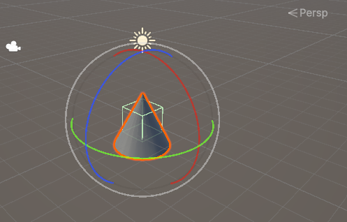

Polyhedres Quadriques
This project focuses on the procedural generation of 3D geometric shapes using triangular mesh decomposition. Several parametric objects are modeled by computing their vertices and faces based on mathematical formulations.
Implemented Shapes
– Cylinder with configurable radius, height, and number of meridians
– Sphere defined by radius, parallels, and meridians, with proper pole handling
– Cone with adjustable radius and height, supporting truncated configurations
Technical Details
– Mesh generation using triangular facets
– Closed surfaces with top and bottom caps
– Careful management of topology (connections between caps and body)
– Parametric control allowing flexible shape resolution
Advanced Features
– Support for truncated geometric objects
– Partial sphere generation for custom shapes
This project demonstrates a strong understanding of 3D geometry, mesh topology, and procedural modeling techniques commonly used in computer graphics and game development.
🔗 View the source code on GitHub